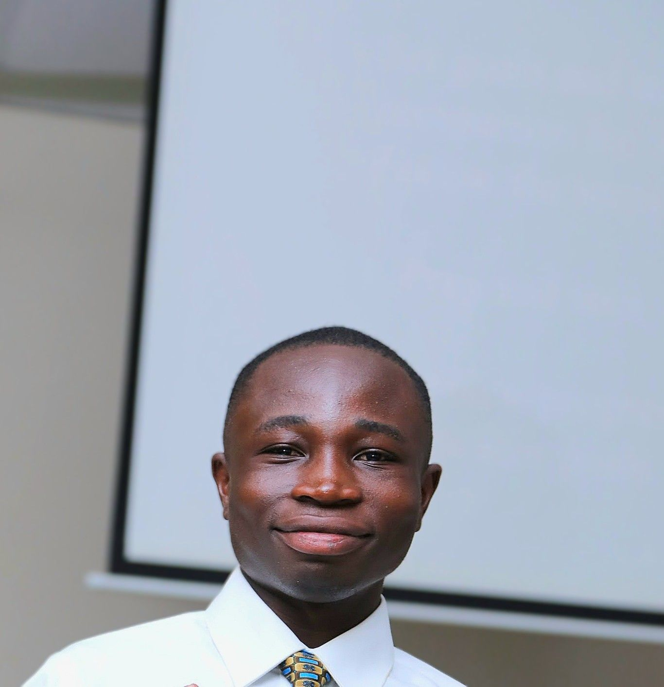

Daniel Samegbe | WDD 130

My name is Samegbe Daniel, and I am from Accra, Ghana. I have a deep interest in documentaries, especially those that explore people's lives, their journeys, and the stories behind successful businesses. I am currently studying Software Development at BYU–Idaho, where I am building the skills to bring my creative ideas to life. By the end of this course, I look forward to creating and styling my own website, turning my imagination into something tangible. As I continue this journey, I am excited about the possibilities that lie ahead. I look forward to learning, growing, and discovering my place in the ever-evolving world of technology and creativity..